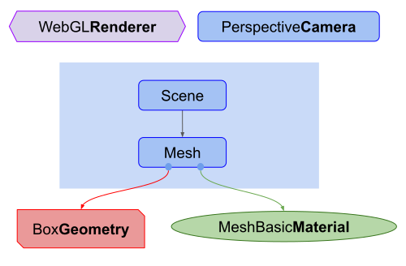
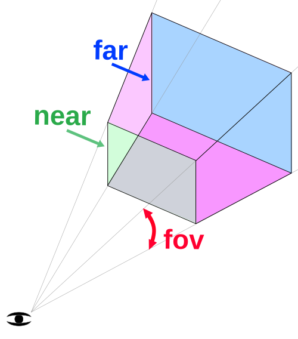
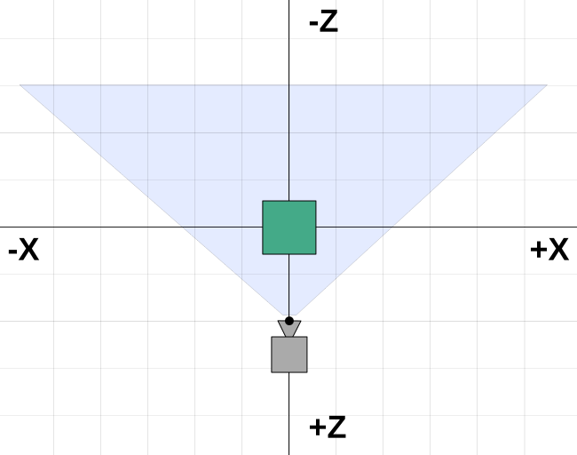

Fundamentals
This is the first article in a series of articles about three.js. Three.js is a 3D library that tries to make it as easy as possible to get 3D content on a webpage.
Three.js is often confused with WebGL since more often than not, but not always, three.js uses WebGL to draw 3D. WebGL is a very low-level system that only draws points, lines, and triangles. To do anything useful with WebGL generally requires quite a bit of code and that is where three.js comes in. It handles stuff like scenes, lights, shadows, materials, textures, 3d math, all things that you'd have to write yourself if you were to use WebGL directly.
These tutorials assume you already know JavaScript and, for the most part they will use ES6 style. See here for a terse list of things you're expected to already know. Most browsers that support three.js are auto-updated so most users should be able to run this code. If you'd like to make this code run on really old browsers look into a transpiler like Babel. Of course users running really old browsers probably have machines that can't run three.js.
When learning most programming languages the first thing people
do is make the computer print "Hello World!". For 3D one
of the most common first things to do is to make a 3D cube.
So let's start with "Hello Cube!"
Before we get started let's try to give you an idea of the structure of a three.js app. A three.js app requires you to create a bunch of objects and connect them together. Here's a diagram that represents a small three.js app

Things to notice about the diagram above.
There is a
Renderer. This is arguably the main object of three.js. You pass aSceneand aCamerato aRendererand it renders (draws) the portion of the 3D scene that is inside the frustum of the camera as a 2D image to a canvas.There is a scenegraph which is a tree like structure, consisting of various objects like a
Sceneobject, multipleMeshobjects,Lightobjects,Group,Object3D, andCameraobjects. ASceneobject defines the root of the scenegraph and contains properties like the background color and fog. These objects define a hierarchical parent/child tree like structure and represent where objects appear and how they are oriented. Children are positioned and oriented relative to their parent. For example the wheels on a car might be children of the car so that moving and orienting the car's object automatically moves the wheels. You can read more about this in the article on scenegraphs.Note in the diagram
Camerais half in half out of the scenegraph. This is to represent that in three.js, unlike the other objects, aCameradoes not have to be in the scenegraph to function. Just like other objects, aCamera, as a child of some other object, will move and orient relative to its parent object. There is an example of putting multipleCameraobjects in a scenegraph at the end of the article on scenegraphs.Meshobjects represent drawing a specificGeometrywith a specificMaterial. BothMaterialobjects andGeometryobjects can be used by multipleMeshobjects. For example to draw two blue cubes in different locations we could need twoMeshobjects to represent the position and orientation of each cube. We would only need oneGeometryto hold the vertex data for a cube and we would only need oneMaterialto specify the color blue. BothMeshobjects could reference the sameGeometryobject and the sameMaterialobject.Geometryobjects represent the vertex data of some piece of geometry like a sphere, cube, plane, dog, cat, human, tree, building, etc... Three.js provides many kinds of built in geometry primitives. You can also create custom geometry as well as load geometry from files.Materialobjects represent the surface properties used to draw geometry including things like the color to use and how shiny it is. AMaterialcan also reference one or moreTextureobjects which can be used, for example, to wrap an image onto the surface of a geometry.Textureobjects generally represent images either loaded from image files, generated from a canvas or rendered from another scene.Lightobjects represent different kinds of lights.
Given all of that we're going to make the smallest "Hello Cube" setup that looks like this

First let's load three.js
- <script type="module">
- import * as THREE from 'three';
- </script>
It's important you put type="module" in the script tag. This enables
us to use the import keyword to load three.js. As of r147, this is the
only way to load three.js properly. Modules have the advantage that they can easily import other modules
they need. That saves us from having to manually load extra scripts
they are dependent on.
Next we need is a <canvas> tag so...
- <body>
- <canvas id="c"></canvas>
- </body>
We will ask three.js to draw into that canvas so we need to look it up.
- <script type="module">
- import * as THREE from 'three';
- function main() {
- const canvas = document.querySelector('#c');
- const renderer = new THREE.WebGLRenderer({antialias: true, canvas});
- ...
- </script>
After we look up the canvas we create a WebGLRenderer. The renderer
is the thing responsible for actually taking all the data you provide
and rendering it to the canvas.
Note there are some esoteric details here. If you don't pass a canvas into three.js it will create one for you but then you have to add it to your document. Where to add it may change depending on your use case and you'll have to change your code so I find that passing a canvas to three.js feels a little more flexible. I can put the canvas anywhere and the code will find it whereas if I had code to insert the canvas into to the document I'd likely have to change that code if my use case changed.
Next up we need a camera. We'll create a PerspectiveCamera.
- const fov = 75;
- const aspect = 2; // the canvas default
- const near = 0.1;
- const far = 5;
- const camera = new THREE.PerspectiveCamera(fov, aspect, near, far);
fov is short for field of view. In this case 75 degrees in the vertical
dimension. Note that most angles in three.js are in radians but for some
reason the perspective camera takes degrees.
aspect is the display aspect of the canvas. We'll go over the details
in another article but by default a canvas is
300x150 pixels which makes the aspect 300/150 or 2.
near and far represent the space in front of the camera
that will be rendered. Anything before that range or after that range
will be clipped (not drawn).
Those four settings define a "frustum". A frustum is the name of a 3d shape that is like a pyramid with the tip sliced off. In other words think of the word "frustum" as another 3D shape like sphere, cube, prism, frustum.

The height of the near and far planes are determined by the field of view. The width of both planes is determined by the field of view and the aspect.
Anything inside the defined frustum will be drawn. Anything outside will not.
The camera defaults to looking down the -Z axis with +Y up. We'll put our cube at the origin so we need to move the camera back a little from the origin in order to see anything.
- camera.position.z = 2;
Here's what we're aiming for.

In the diagram above we can see our camera is at z = 2. It's looking
down the -Z axis. Our frustum starts 0.1 units from the front of the camera
and goes to 5 units in front of the camera. Because in this diagram we are looking down,
the field of view is affected by the aspect. Our canvas is twice as wide
as it is tall so across the canvas the field of view will be much wider than
our specified 75 degrees which is the vertical field of view.
Next we make a Scene. A Scene in three.js is the root of a form of scene graph.
Anything you want three.js to draw needs to be added to the scene. We'll
cover more details of how scenes work in a future article.
- const scene = new THREE.Scene();
Next up we create a BoxGeometry which contains the data for a box.
Almost anything we want to display in Three.js needs geometry which defines
the vertices that make up our 3D object.
- const boxWidth = 1;
- const boxHeight = 1;
- const boxDepth = 1;
- const geometry = new THREE.BoxGeometry(boxWidth, boxHeight, boxDepth);
We then create a basic material and set its color. Colors can be specified using standard CSS style 6 digit hex color values.
- const material = new THREE.MeshBasicMaterial({color: 0x44aa88});
We then create a Mesh. A Mesh in three.js represents the combination
of three things
- A
Geometry(the shape of the object) - A
Material(how to draw the object, shiny or flat, what color, what texture(s) to apply. Etc.) - The position, orientation, and scale of that object in the scene relative to its parent. In the code below that parent is the scene.
- const cube = new THREE.Mesh(geometry, material);
And finally we add that mesh to the scene
- scene.add(cube);
We can then render the scene by calling the renderer's render function and passing it the scene and the camera
- renderer.render(scene, camera);
Here's a working example
It's kind of hard to tell that is a 3D cube since we're viewing it directly down the -Z axis and the cube itself is axis aligned so we're only seeing a single face.
Let's animate it spinning and hopefully that will make
it clear it's being drawn in 3D. To animate it we'll render inside a render loop using
requestAnimationFrame.
Here's our loop
- function render(time) {
- time *= 0.001; // convert time to seconds
- cube.rotation.x = time;
- cube.rotation.y = time;
- renderer.render(scene, camera);
- requestAnimationFrame(render);
- }
- requestAnimationFrame(render);
requestAnimationFrame is a request to the browser that you want to animate something.
You pass it a function to be called. In our case that function is render. The browser
will call your function and if you update anything related to the display of the
page the browser will re-render the page. In our case we are calling three's
renderer.render function which will draw our scene.
requestAnimationFrame passes the time since the page loaded to
our function. That time is passed in milliseconds. I find it's much
easier to work with seconds so here we're converting that to seconds.
We then set the cube's X and Y rotation to the current time. These rotations are in radians. There are 2 pi radians in a circle so our cube should turn around once on each axis in about 6.28 seconds.
We then render the scene and request another animation frame to continue our loop.
Outside the loop we call requestAnimationFrame one time to start the loop.
It's a little better but it's still hard to see the 3d. What would help is to add some lighting so let's add a light. There are many kinds of lights in three.js which we'll go over in a future article. For now let's create a directional light.
- const color = 0xFFFFFF;
- const intensity = 3;
- const light = new THREE.DirectionalLight(color, intensity);
- light.position.set(-1, 2, 4);
- scene.add(light);
Directional lights have a position and a target. Both default to 0, 0, 0. In our case we're setting the light's position to -1, 2, 4 so it's slightly on the left, above, and behind our camera. The target is still 0, 0, 0 so it will shine toward the origin.
We also need to change the material. The MeshBasicMaterial is not affected by
lights. Let's change it to a MeshPhongMaterial which is affected by lights.
- const material = new THREE.MeshBasicMaterial({color: 0x44aa88}); // greenish blue
- const material = new THREE.MeshPhongMaterial({color: 0x44aa88}); // greenish blue
Here is our new program structure

And here it is working.
It should now be pretty clearly 3D.
Just for the fun of it let's add 2 more cubes.
We'll use the same geometry for each cube but make a different material so each cube can be a different color.
First we'll make a function that creates a new material with the specified color. Then it creates a mesh using the specified geometry and adds it to the scene and sets its X position.
- function makeInstance(geometry, color, x) {
- const material = new THREE.MeshPhongMaterial({color});
- const cube = new THREE.Mesh(geometry, material);
- scene.add(cube);
- cube.position.x = x;
- return cube;
- }
Then we'll call it 3 times with 3 different colors and X positions
saving the Mesh instances in an array.
- const cubes = [
- makeInstance(geometry, 0x44aa88, 0),
- makeInstance(geometry, 0x8844aa, -2),
- makeInstance(geometry, 0xaa8844, 2),
- ];
Finally we'll spin all 3 cubes in our render function. We compute a slightly different rotation for each one.
- function render(time) {
- time *= 0.001; // convert time to seconds
- cubes.forEach((cube, ndx) => {
- const speed = 1 + ndx * .1;
- const rot = time * speed;
- cube.rotation.x = rot;
- cube.rotation.y = rot;
- });
- ...
and here's that.
If you compare it to the top down diagram above you can see it matches our expectations. With cubes at X = -2 and X = +2 they are partially outside our frustum. They are also somewhat exaggeratedly warped since the field of view across the canvas is so extreme.
Our program now has this structure

As you can see we have 3 Mesh objects each referencing the same BoxGeometry.
Each Mesh references a unique MeshPhongMaterial so that each cube can have
a different color.
I hope this short intro helps to get things started. Next up we'll cover making our code responsive so it is adaptable to multiple situations.